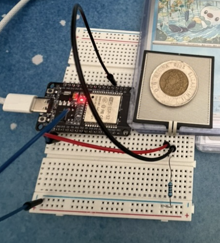
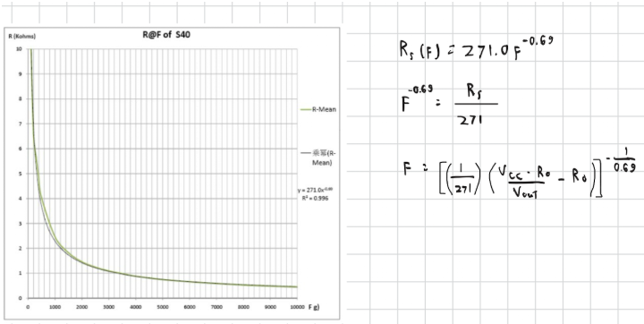

Overview
First designed a claw in CAD using a rack and pinion gear to drive motion. Then created a calibration circuit for the force sensor, and made our own force-ADC curve after realising variance to the datasheet was too high.
Currently working on the circuitry for the motor, after which I will code the PI loop while my partner prints and assembles the claw. After we confirm the claw works with force presets, we will add a camera connected to a Raspberry Pi for the computer vision software.
Process
I started by building a calibration circuit for the FSR (force-sensing resistor) — to ensure code translates ADC values to force properly — while my partner began designing the claw's CAD.

Experimental force readings differed from theoretical values enough to warrant the creation of our own force–ADC curve. This was done using several data points collected experimentally.

Results
In progress! Check back soon for the finished gripper, PI control results, and computer vision integration.